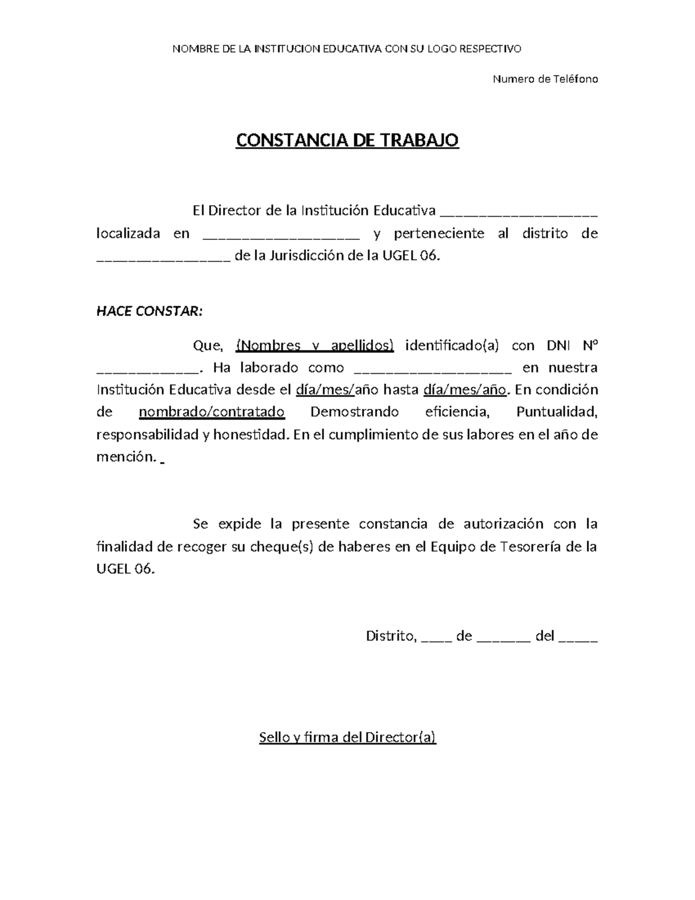

Hola, soy Andres Nancay
Data Analyst & BI Developer
3 años de experiencia convirtiendo datos en KPIs clave y valor estratégico.
Sobre Mí
En estos 3 años he trabajado con datos de logística, finanzas, recursos humanos, experiencia del consumidor y gestión pública. Gracias a esta experiencia tan diversa, logré entender cómo el trabajo manual, el desorden y la falta de indicadores terminan limitando el verdadero valor del análisis de datos.
Por eso, mi enfoque abarca todo el ciclo de vida de los datos: desde el desarrollo de herramientas internas que faciliten, automaticen y estandaricen la gestión de información, hasta la implementación de procesos ETL y modelos de datos eficientes para centralizar reportes y garantizar consistencia en los indicadores. Todo esto acompañado de dashboards interactivos, aplicando principios de UX/UI para crear interfaces limpias, intuitivas y enfocadas en la toma de decisiones.
“Disfruto aprender constantemente, explorar nuevas herramientas y encontrar formas más eficientes de transformar datos en información clara, útil y accionable para la toma de decisiones.”
+3
Años de Experiencia
+15
Proyectos Realizados
Ganas de aprender y mejorar
Idiomas
Español
NativoInglés
B1 - IntermedioExperiencia
Analista de Datos
Ministerio de Cultura (Oficina de Estadística)
Transformé procesos manuales en soluciones automatizadas de Business Intelligence mediante Power BI, SQL y Excel. Diseñé dashboards estratégicos y modelos de datos confiables que mejoraron la visibilidad de indicadores clave y aumentaron significativamente la adopción de reportes por parte de directivos.
Analista de Gestión
Oca Global
Desarrollé soluciones de analítica y automatización para optimizar el monitoreo operativo de inventario, personal y flota. Implementé procesos ETL y flujos automatizados que transformaron datos dispersos en reportes centralizados, precisos y accionables.

Analista BI Junior
Cooperativa Pacífico
Diseñé dashboards orientados a la toma de decisiones y optimicé procesos de reporting mediante Power BI y SQL Server. Fortalecí la calidad e integridad de los datos automatizando actualizaciones y documentando soluciones BI para mejorar la eficiencia operativa.
Analista BI Jr
Datanet Consultora
Conecté necesidades de negocio con soluciones de Business Intelligence, integrando SQL, Python y Power BI para desarrollar dashboards enfocados en experiencia del cliente y análisis estratégico. Destaqué por liderar propuestas UX/UI innovadoras que elevaron la calidad visual y funcional de los proyectos.
Asistente de Análisis
PCENTRIX S.A.C.
Participé en la construcción estratégica del modelo de negocio mediante análisis de mercado, dashboards y propuestas de mejora operativa. Impulsé iniciativas enfocadas en optimización de procesos, fidelización de clientes y desarrollo de nuevos proyectos basados en datos.
Proyectos
Dashboard de KPIs Financieros
Modelo de datos integral en Power BI con DAX avanzado para seguimiento en tiempo real de operaciones, reduciendo el trabajo manual en un 70%.
Pipeline ETL Automatizado
Proceso de extracción y limpieza mediante Python y T-SQL para consolidar información dispersa, optimizando tiempos de consulta y garantizando consistencia de datos.
Tecnologías
Desarrollo / Programación

Base de Datos


Business Intelligence

Diseño e Interfaces (UI/UX)

Metodologías Ágiles

Inteligencia Artificial


Otros
Educación
Formación Académica
Bachiller en Administración y Negocios Internacionales
Universidad Peruana de Ciencias Aplicadas (UPC)
Certificaciones
Especialización en SQL Server para Analítica
DMC Institute
Business Intelligence con Power BI (Nivel Avanzado)
Edúcate Perú Consultores
Excel Skills for Business: Advanced
Macquarie University
Diplomado en Data Analytics
Univ. Privada San Francisco de Asís (USFA)
Contacto
¿Tienes un proyecto en mente o quieres conectar? Elige cómo contactarme.
Envíame un mensaje